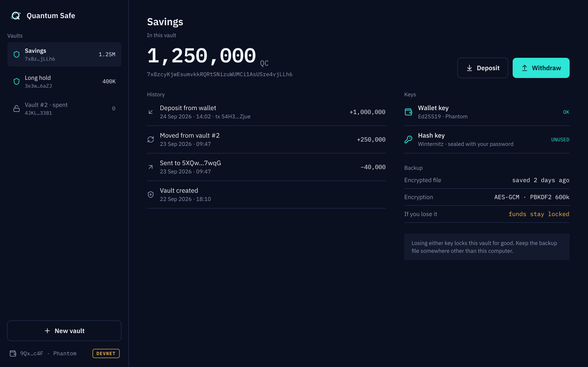

QuantCoin keeps long-held Solana tokens safe from a quantum computer
A Token-2022 token with a hybrid vault · Bryan Kwandou · devnet, pre-audit
QuantCoin is a Solana token whose treasury, team and reserve balances sit in a vault that needs two signatures to open. One is the normal Ed25519 signature. The other is a hash-based signature that a quantum computer cannot forge. It is on devnet and it has not had an external audit yet.
Problem
Effectively all SOL sits behind keys a quantum computer can break
Bitcoin
~25%
Ethereum
65%+
Solana
all
0 share of supply with its public key exposed 100%
On Solana the address is the public key.
Source: Citi Institute, Quantum Threat, January 2026 [E1] [E2]
These are Citi's numbers, not mine. Bitcoin hides most keys behind a hash until you spend. On Solana your address is your Ed25519 public key, so every balance has its key on-chain already. A treasury meant to sit for twenty years can be read today and drained the day the machine exists.
How close
Experts put a code-breaking machine past even odds within 15 years
Anza, within 5 years
3–5%
Citi, by 2034
19–34%
GRI experts, 10 years
28–49%
GRI experts, 15 years
51–70%
Citi, by 2044
60–82%
0% estimated probability, low to high 100%
Source: Anza, April 2026 [T4]; Citi Institute, January 2026 [T3]; Global Risk Institute, 2025 report [T1]
Even the most cautious estimate, Anza's, is not zero. Google also cut the qubits needed to break these keys about twentyfold this year [R2]. A vesting schedule signed today runs inside these windows.
Deadline
Regulators want quantum-vulnerable signatures gone by 2035
2024 NIST publishes FIPS 205, hash-based signatures [G3]
2028 UK: discovery and migration plan done [G4]
2030 NIST deprecates 112-bit ECDSA and RSA [G1]
2031 UK: priority systems migrated [G4]
2035 NIST disallows EdDSA, Solana's signature family [G1]
Source: NIST IR 8547, November 2024 [G1]; NIST, August 2024 [G3]; UK NCSC, March 2025 [G4]
The US and UK both land on 2035. The hash-based signature QuantCoin uses already has a NIST standard behind it since 2024, so the conservative choice is also the standard one. Custodians will have to answer for this long before 2035.
Readiness
Most security teams worry, almost none have a plan
Worried about quantum
62%
Have a defined strategy
5%
0 ISACA poll, 2,600+ professionals 100%
That gap is who we sell to.
Source: ISACA Quantum Pulse Poll, April 2025 [S1]
Sixty-two percent are worried, five percent have a strategy [S1]. Nobody is going to pull us in; we will have to sell. The gap between worry and action is the opening.
Product
A vault opens only when both signatures check out
Ed25519 Owner's normal wallet signature
+
Winternitz One-time hash signature over SHA-256
→
Vault program Checks both, or refuses
→
Spend Pays out, refunds the rest to a fresh vault
An attacker has to break both.
An attacker has to break both. Before quantum computers exist, Ed25519 also covers any bug in the newer Winternitz code. After, the hash half still holds. Every spend empties the vault, so no one-time key signs twice. Everyday transfers stay plain Token-2022, so wallets need nothing new.
Demo
One devnet spend moved 22 trillion QC between vaults
spend Np26Uxfw…
Used
610k
Limit
1.4M
compute units per transaction
Source: QuantCoin README, devnet run 2026-09-23; Solana docs, compute limit [X1]
This is the whole supply moving. One million out to a destination, the rest into the owner's next vault, and the old vault closed. It used about six hundred ten thousand compute units, well under the one point four million limit per transaction. The TypeScript client and the Rust program agree byte for byte.
App design
Holders see one balance and two keys

Design mockup, not yet built. The vault program and CLI client run on devnet today.
Losing either key locks the vault, so the app puts the backup up front.
This is the design for the holder app, and I want to be clear it is a design, not a shipped app. What runs today is the program and the command-line client. The screen shows the two keys and the encrypted backup, because a lost hash key means locked funds.
How it works
The program stores nothing and fits in 6,872 bytes
Pinocchio, one instruction. The vault address commits to both keys. The signed message binds every account, so a relayer cannot redirect funds.
Source: QuantCoin README, measured numbers
No state means nothing to corrupt. The address itself commits to the keys. Program, vault, mint, destination, refund and amount are all inside the signed message. Twelve tests pass against real Token-2022, and an internal audit fixed two issues and documented five more.
Competition
Solana's own plan protects new wallets, not old balances
Protects Available Needs a protocol change Solana Foundation plan [L3] New wallets If quantum turns credible Yes Blueshift Winternitz vault [L1] SOL only Now No QuantCoin Any Token-2022 balance Devnet now No
Source: Solana Foundation, April 2026 [L3]; Blueshift on GitHub [L1]
The Foundation says quantum is still years away and plans Falcon for new wallets later. That is fair. But its plan starts when the threat is credible, and a treasury cannot move in a day. Blueshift proved the idea for SOL. QuantCoin extends it to tokens.
Go-to-market
The first users are treasuries that plan to hold for years
Held in Solana DAO treasuries in 2022, the last public count. Team vesting adds balances locked for years.
Source: Decrypt citing DeepDAO, March 2022 [L6]
The figure is old and secondhand, and I say so. The point is that long-held treasuries exist. I have not signed any of them yet. There are no users today; the signal so far is engineering.
Team
One builder wrote the program, the client and the audit trail
Bryan Kwandou built the Pinocchio vault, the TypeScript WOTS client, the Codama IDL and the internal audit. The next hire is a reviewer who did not write the code.
It is one person today. That is the main risk, and the reason the external audit comes before anything else.
Ask
Fund an external audit, then lock the program for good
After the audit: deploy to mainnet and set the upgrade authority to final, because that key is an Ed25519 backdoor
The ask is simple. An outside audit of a program under seven kilobytes. Then mainnet, and the upgrade key thrown away, because any Ed25519 key left behind would undo the whole point.